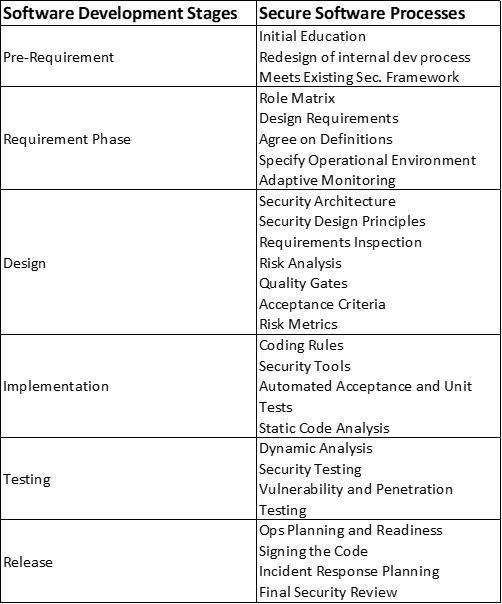
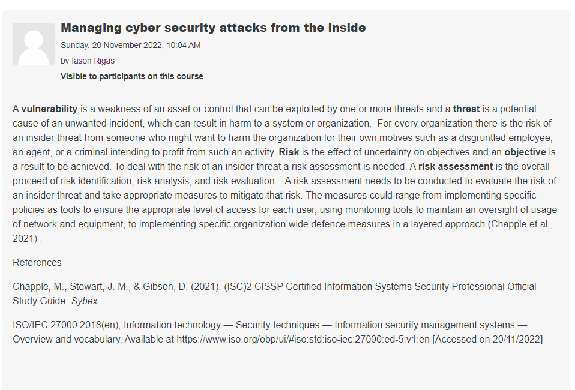

The focus of unit 2 was on practical skills for modelling to support
software development using UML diagrams and other tools and by looking
into the SDLC and integrating secure software development practices in
agile ways.
Unit 2 Seminar Activity
Question 1
Create a 2-column multi-line table. In the left-hand column, include the software development stages of the Scrum agile life cycle approach to project management. In the right-hand column, describe the processes which you recommend are applied at each stage to ensure that secure software is produced at the end of the development:

Some say that people are the biggest risk of cyber security.
Select five terms from ISO/IEC Standard 27000 Section 3 Terms and Definitions and write a 300-word blog post on how people can be managed to overcome cyber security attacks from the inside.

Sharma, A. & Bawa, R. K. (2020) Identification and Integration
of Security Activities for Secure Agile Development. International
Journal of Information Technology.